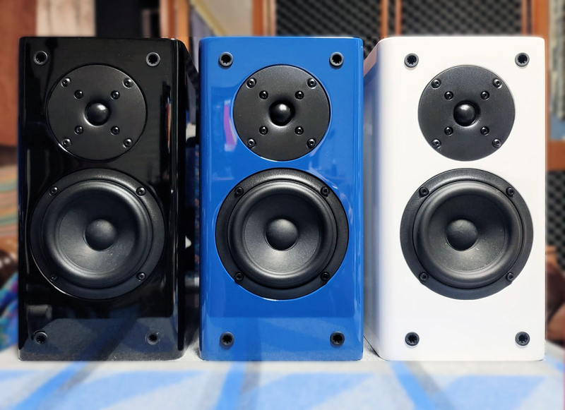

The True Mini
We are pleased to announce that the Philharmonic Family now includes a highly accurate "true" mini speaker designed for surround use in home theater installations or as a desktop monitor.

The new True Mini's broad and even dispersion will provide an immersive surround sound stage and complement the signature sound of our larger speakers. The tweeter is a 3/4" fabric dome from SB Acoustics, mated to a 4" SB Acoustics reed cone woofer by a highly sophisticated 14-element crossover. The cabinets measure only 6" W X 7.5" D X 11" H.
The True Mini's will go anywhere and incorporate a keyhole bracket on the rear for easy wall or ceiling mounting and can be used either ported or sealed. The cabinets are finished in attractive hard lacquer available in either high gloss black, white, or blue. The True Mini's are priced at only $380/pair plus shipping. To order, just write Dennis at info@philharmonicaudio.com.
Measurements
(On Axis and Off Axis Horizontally, One Meter Anechoic)
On Axis

20 Degrees Off Axis

45 Degrees Off Axis

80 Degrees Off Axis

Specifications
| Cabinet | High Gloss Black, White, or Blue |
| Tweeter | SB Acoustics 3/4" Fabric Dome |
| Woofer | SB Acoustics 4" Reed Cone |
| Frequency Response | Ported: 70 Hz - 20kHz (+1.5 / - 3db) Anechoic Sealed: 90 Hz - 20 kHz (+1.5/ -3dB) Anechoic |
| Sensitivity | 85 dB (2.83v/1M) |
| Box Alignment | Ported or Sealed |
| Dimensions | 11" H x 6" W x 7.5" D |
| Weight | 12 lbs |
| Nominal Impedance | 4 Ohms (3 Ohms minimum, 11 Ohms Maximum) |
| Crossover | Linkwitz-Riley 4th Order Acoustic at 2,100 Hz |